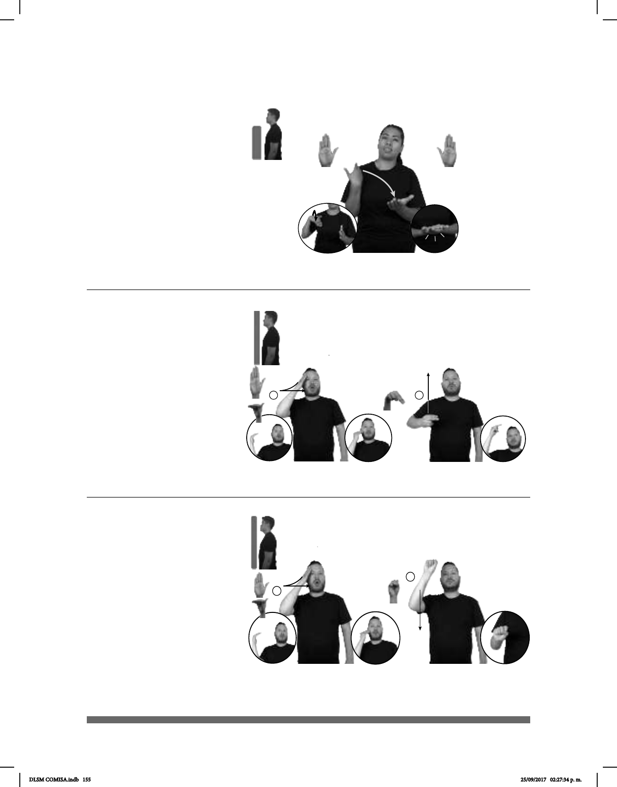

155
(B-P 133)
pro-Él DUDA PERO YA pro-YO EXPLICAR pro-ÉL CONVENCER
Él tenía dudas, pero le expliqué y lo convencí.
(B-P 134)
___muy
COREA-DEL-NORTE FAMOSA DENTRO NOTICIAS
Corea del Norte es muy famosa en las noticias.
Seña: SC: I. y II. SM
I. Seña que pasa de
B-P.2 a B-P.11; II. N.1
I. Palma hacia la
izquierda; II. Palma hacia adentro.
I. La mano inicia sobre
la sien y termina a la altura de la
cabeza; II. Del pecho a la frente.
I. Recto mientras la
mano se dobla; II. Recto.
País de Asia oriental
cuya capital es Pionyang.
Seña: SB
MD y MB B-P.2
MD la palma inicia
hacia adentro y termina hacia arriba. MB
palma hacia arriba.
MD y MB a la altura del
pecho.
La MD ´golpea a la MB.
v. tr. Conseguir con razones
o argumentos que una persona haga una
cosa o cambie de parecer.
(B-P 135)
COREA-DEL-SUR
allá
HABER MUCHO PESCADO
En Corea del Sur hay mucho pescado.
Seña: SC: I. y II. SM
I. Seña que pasa de
B-P.2 a B-P.11; II. S.1
I. Palma hacia la
izquierda; II. Palma hacia adentro.
I. La mano inicia sobre
la sien y termina a la altura de la
cabeza; II. Del pecho a la frente.
I. Recto mientras la
mano se dobla; II. Recto.
País de Asia oriental
cuya capital es Seúl.
DLSM COMISA.indb 155 25/09/2017 02:27:34 p. m.